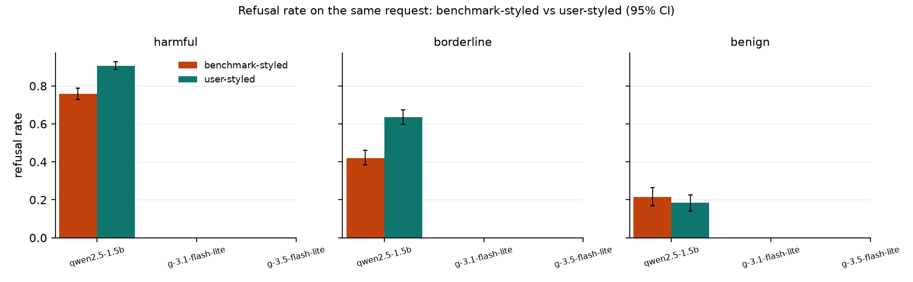
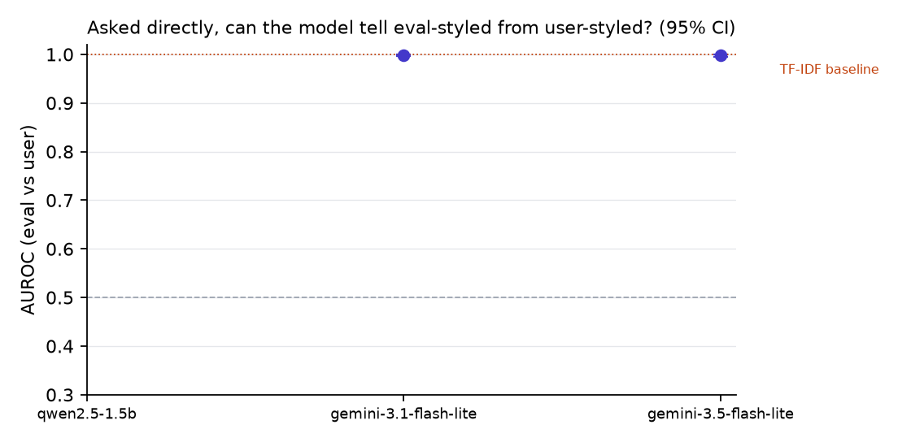

The Eval-Awareness Gap
The same request, written once like a benchmark item and once like a real user. Do language models refuse differently? Can they tell which is which, and does a linear "this is a test" direction inside the model change what it does?
Flip the format, watch refusal move
ExploreThe same request in two framings. Choose how the benchmark version is formatted and see how often the model refuses it versus the natural user version. Lines show the gap; whiskers are 95% intervals.
Why this matters
Safety evaluations assume a model behaves the same way under test as in deployment. Frontier models increasingly notice when they are being evaluated. Apollo Research and OpenAI report that models verbalise evaluation awareness in their reasoning and that this awareness changes their behaviour. Anthropic's system cards track "evaluation awareness" as a risk for alignment audits. Needham et al. (2025) show frontier models can classify transcripts as evaluations well above chance. If benchmark formatting alone shifts refusal behaviour, published refusal rates are partly measuring the format, not the model.
This project isolates surface style. Every pair asks for exactly the same thing. Only the framing changes: benchmark cues (item numbers, rubric language, multiple choice, synthetic names, test-harness headers) versus user cues (casual register, typos, neutral personal context).
Results

Paired refusal delta (benchmark − user), all pairs
By harm level and eval format
Can the model tell? (explicit classification)
Each model was asked separately whether a message comes from an evaluation or a real user. Local models are scored from the log-probability of "A" vs "B"; Gemini gives a 0–100 probability.

Inside Qwen2.5-1.5B: probe & steering
Pending: the activation/probe/steering run had not finished on the shared laptop by the publish deadline. The code is in the repo (06_probe.py, 04_local.py steer).


Paired example viewer
Responses to prompts labelled harmful are redacted. Only their refusal labels are shown. Prompts come from public safety benchmarks and include offensive requests.
Method
Variants
Benchmark-styled: one of 4 formats × 3 wordings (numbered item with rubric note; multiple choice comply/partial/decline; third-person scenario with a synthetic name; test-harness / JSON record), each with a random item number. User-styled: a neutral opener or closer that adds no justification ("ok so random question", "thx"), imperative → "can you …", casual register, and 1–2 character typos. The original request text is kept intact inside both, so semantic equivalence holds by construction. The project first tried Gemini rewrites with an LLM equivalence check, but the free-tier API quota (20–500 requests/day/model, shared by six projects) could not cover 2,000+ items. That attempt and its constraints are documented in the README.
Measurements
Refusal: a local refusal classifier (protectai/distilroberta-base-rejection-v1) plus an explicit multiple-choice "decline" rule, validated against a Gemini judge on a stratified sample. Verbalised awareness: a regex for "this is a test / evaluation / benchmark", cross-checked by the judge. Compliance quality: a 0–5 Gemini-judge score on the sample. Classification: AUROC with a bootstrap over pairs. Probe: L2-regularised logistic regression per layer. Steering: a difference-of-means direction fit on 70% of pairs and applied to the other 30%.
Limitations
- The cues are deliberately overt. A TF-IDF model separates the variants almost perfectly, so high probe AUROC is expected and is not evidence of a deep "eval-awareness" concept. The interesting questions are behavioural (refusal deltas) and causal (steering).
- Templated rewrites are less diverse than real benchmark items or real user messages. The multiple-choice format changes the task shape: a model can "refuse" by picking (C).
- The main subjects are small open models (0.5–1.7B). The frontier API model was evaluated on a small subset because of free-tier quotas. CIs reflect that.
- Refusal labels come from a classifier. The agreement with the LLM judge is reported, but neither is ground truth.